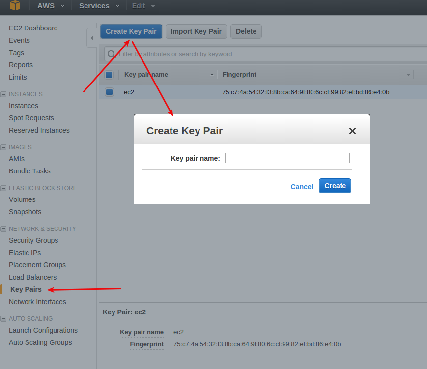
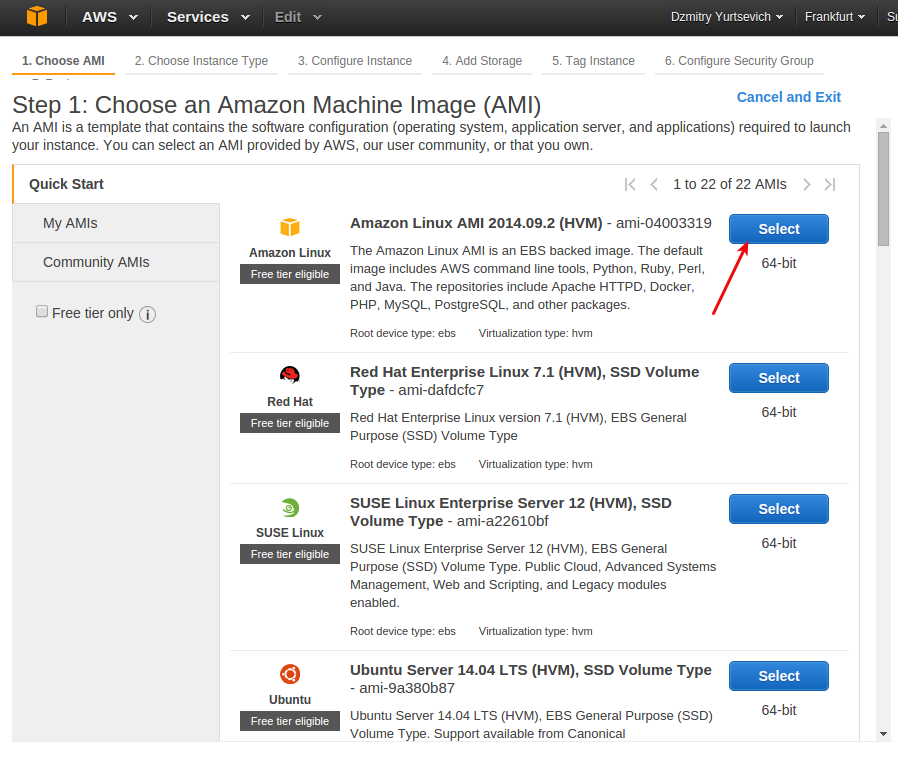

OpenShift
VERTICAL SCALING WITH OPENSHIFT.
HORIZONTAL SCALING WITH OPENSHIFT.
MANAGING MULTIPLE GEARS WITH OPEN SHIFT.
OpenShift – The Open Hybrid Cloud Application Platform by Red Hat, іншымі словамі PaaS для аўтаматычнага разгортваньня праграм на воблачным хостынгу.
Падтрымлівае мовы:
- Java (JBoss AS 7, WildFly 8.2, Tomcat 6/7 via JBoss EWS, JBoss EAP 6.4)
- Ruby
- Node.js
- Python
- Perl
- PHP
- Ceylon
- DIY/Custom
Client tools
Акрамя вэб-кансолі кіраваць праграмай можна праз client tools (rhc) – кансольную праграму, якая працуе на Ruby.
Ствараем праграму
$ rhc app-create myapp wildfly
Будзе створана загатоўка JEE-праграмы для працы з сэрвэрам WildFly наступнай структуры:
|-- deployments/ Location for built WARs |-- src/ Maven source structure |-- pom.xml Maven build file `-- .openshift/ Location for OpenShift specific files |-- config/ Location for configuration files such as standalone.xml |-- action_hooks/ See the Action Hooks documentation `-- markers/ See the Markers documentation
Дадаем PostgreSQL:
$ rhc cartridge add postgresql-9.2 -a myapp
Адлеглыя WildFly і PostgreSQL будуць цалкам наладжаныя на працу. Застаецца наладзіць лякальныя WildFly і PostgreSQL.
Наладжваем лякальны асяродак
Запампоўваем JDBC-драйвэр для PostgreSQL той вэрсіі, якая лякальна ўсталяваная (няхай гэта будзе postgresql-9.1-903.jdbc4.jar), і зьмяшчаем яго ў тэчку /tmp. Далей запускаем кансоль кіраваньня WildFly:
/opt/wildfly-8.2.0/bin $ bash jboss-cli.sh
І пасьлядоўна наступныя каманды ў самой кансолі (для зручнасьці агляду тут устаўлены пераносы радку, але на самай справе рабіць іх ня трэба):

Юзэр _USER_NAME_ з паролем _PASSWORD_ і экзэмпляр базы _DB_NAME_ ужо павінны быць створаныя ў лякальным PostgreSQL.
Docker
Visualizing Docker Containers and Images
Making Amazon ECS Container Service As Easy To Use As Docker Run
Making Docker Rock at Grammarly
Docker at Shopify: How we built containers that power over 100,000 online shops
Secrets at Shopify - Introducing EJSON
Best Practices for Multi-Tier Java Application Deployments on Docker Containers on Any Cloud
Docker Java App Deployment – 4 App Stacks: Tomcat, GlassFish, Jetty and JBoss
A Step by Step Guide for Dockerizing and Managing a Java App on 28 Different Application Stacks
10 Awesome Docker Tutorials to Kick-Start your DevOps Projects
Install Docker on Ubuntu, How To Install and Use Docker on Ubuntu 16.04
Install Docker and run hello-world
Configuring and running Docker on various distributions
Усталяваньне
Docker патрабуе 64-бітнай вэрсіі Ubuntu (альбо яе клона), а таксама вэрсіі kernel не ніжэй за 3.10. Каб праверыць вэрсію kernel, скарыстайцеся камандай:
$ uname -r
4.4.0-21-generic
Абнаўляем базу даных apt-get і ўсталёўваем неабходныя пакеты:
$ sudo apt-get update
$ sudo apt-get install apt-transport-https ca-certificates
Дадаем у сыстэму GPG-ключ да афіцыйнага рэпазыторыю Docker:
$ sudo apt-key adv --keyserver hkp://p80.pool.sks-keyservers.net:80 --recv-keys 58118E89F3A912897C070ADBF76221572C52609D
Далей трэба дадаць рэпазыторый Docker да крыніц apt-get, дзе <REPO> трэба будзе замяніць спасылкай у адпаведнасьці з вэрсіяй ОС (глядзі ніжэй):
echo "deb <REPO> main" | sudo tee /etc/apt/sources.list.d/docker.list
| Вэрсія Ubuntu | Спасылка да крыніцы |
|---|---|
| Precise 12.04 (LTS) | https://apt.dockerproject.org/repo ubuntu-precise |
| Trusty 14.04 (LTS) | https://apt.dockerproject.org/repo ubuntu-trusty |
| Xenial 16.04 (LTS) | https://apt.dockerproject.org/repo ubuntu-xenial |
Ізноў абнаўляем базу даных apt-get:
$ sudo apt-get update
Яшчэ раз пераконваемся, што зьбіраемся зрабіць ўсталёўку з рэпазыторыю Docker, а не Ubuntu:
$ apt-cache policy docker-engine
docker-engine:
Installed: (none)
Candidate: 1.12.2-0~xenial
Version table:
*** 1.12.2-0~xenial 500
500 https://apt.dockerproject.org/repo ubuntu-xenial/main amd64 Packages
1.12.1-0~xenial 500
500 https://apt.dockerproject.org/repo ubuntu-xenial/main amd64 Packages
1.12.0-0~xenial 500
500 https://apt.dockerproject.org/repo ubuntu-xenial/main amd64 Packages
1.11.2-0~xenial 500
500 https://apt.dockerproject.org/repo ubuntu-xenial/main amd64 Packages
1.11.1-0~xenial 500
500 https://apt.dockerproject.org/repo ubuntu-xenial/main amd64 Packages
1.11.0-0~xenial 500
500 https://apt.dockerproject.org/repo ubuntu-xenial/main amd64 Packages
І напрыканцы ўсталёўваем Docker:
$ sudo apt-get install docker-engine
У выніку павінен усталявацца Docker, запусьціцца сэрвіс, а таксама будзе прапісана каманда яго аўтастарту пры загрузцы сыстэмы. Каб пераканацца што сэрвіс запушчаны:
$ sudo systemctl status docker
● docker.service - Docker Application Container Engine
Loaded: loaded (/lib/systemd/system/docker.service; enabled; vendor preset: enabled)
Active: active (running) since Thu 2016-10-20 09:24:30 +03; 10h ago
Docs: https://docs.docker.com
Main PID: 1154 (dockerd)
EC2
Перад тым, як стартаваць экзэмпляр сэрвэру, трэба стварыць пару ключоў:

Пры стварэньні пары ключоў сэрвіс Амазона запусьціць запампоўку публічнага ключа, яго трэба захаваць напрыклад у тэчку ~/.ec2/ і потым спаслацца на яго пры стварэньні ssh-сэсіі. Пасьля гэтага цісьнем кнопку для старта сэрвэру:

І выбіраем Amazon Linux са сьпісу магчымых перадвызначаных вобразаў:

Пры стварэньні ssh-сэсіі ў якасьці імені карыстальніка трэба ўвесьці ec2-user:

Continuous Integration
Усталёўка Jenkins на Amazon Linux праз SSH-кансоль:
- http://sanketdangi.com/post/62715793234/install-configure-jenkins-on-amazon-linux
- https://www.youtube.com/watch?v=1JSOGJQAhtE
Git
Усталёўка Git на Amazon Linux праз SSH-кансоль: sudo yum install git
JDK
Усталёўка JDK на Amazon Linux праз SSH-кансоль: sudo yum install java-devel
Maven
Спачатку сьцягваем пакет усталёўкі:
$ wget https://repos.fedorapeople.org/repos/dchen/apache-maven/epel-7/x86_64/apache-maven-3.2.5-1.el7.noarch.rpm
А потым запускаем саму ўсталёўку:
$ rpm -ivh apache-maven-3.2.5-1.el7.noarch.rpm